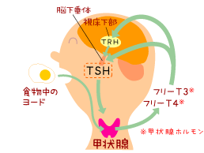

|
Lesson9 : ヨウ素（ヨード）と甲状腺
9-1 甲状腺ホルモンの原料としてのヨウ素（ヨード）甲状腺ホルモンの主な原料がヨードです。昆布などの食べ物の中に含まれているヨードが消化管から吸収され、血液の中に入り、血液から甲状腺の細胞に取り込まれます。甲状腺細胞の中で、いくつかの段階を経て甲状腺ホルモンが合成されます。 甲状腺ホルモンには、T3（トリヨードサイロニン）とT4（サイロキシン）の2種類があり、T4は甲状腺の中だけで作られるのに対し、T3は甲状腺でも作られますが、その約80％は肝臓や腎臓の中でT4から変換されて作られています。 |
 |
T3とT4の働きの大きな違いの一つは、脳内にはT4の形でしか入っていけないことであり、薬としてはT4として飲むことが大事です。特に、脳の発達に甲状腺ホルモンが大事な時期である子どもの治療には、T4であることが絶対的に必要です。
酸素や栄養素、ホルモンといった、人が生きていくために必要な様々な物質は血液中に含まれていて、血管の中を流れて体のすみずみまで運ばれていきますが、同時に血液は体にとり不要な老廃物なども含んでいます。そのため脳に行く血液は「血液脳関門、blood-brain
barrier：BBB）」により、コントロールされていて、T4だけが通過するようになっています。
9-2 ヨウ素（ヨード）が不足すると？
ヨウ素（ヨード）が不足すると、甲状腺ホルモンの原料が足りない状態になります。すると甲状腺が正常に働いていても、甲状腺機能低下症になります。もともと「クレチン症」という病名は、地域性や民族的な理由によるヨード欠乏地帯（欧州のスイス・アルプス地方が有名です）でヨードの欠乏によっておこった甲状腺機能低下症の人を「クレチン、cretin」と呼び、そこからつけられた病名です。
日本は海に囲まれた島国で、海産物を良く食する機会が多いので、ヨウ素（ヨード）は十分食物などから摂取できる国ですから、ヨード欠乏によるクレチン症は、よほど特殊な状態でなければ起こりません。
特殊な状態の一つが、重い脳の病気などで寝たきりのお子さん（重症心身障害児）が長期間（数ヶ月以上）、経腸栄養剤という液状の栄養剤だけで栄養補給されている場合です。経腸栄養剤の中には、ヨードがほとんど含まれていないものがあり、そのためヨード欠乏症による甲状腺機能低下症が引き起こされたという報告があります（山内秀雄他、1991年。児玉浩子他、2003年）。
9-3 ヨウ素（ヨード）とクレチン症の治療、検査
クレチン症の治療に用いられる薬、チラーヂンＳ（註：チラーヂンは別の成分の薬です）は、T4（サイロキシン）を合成して薬にしたものです。
T4は分子1個あたり4個のヨウ素（ヨード）が含まれているので「4」という数字で表現され、T3には3個のヨウ素が含まれていることを表しています。
「クレチン症」の詳しい検査の時に、放射性ヨードを使った「甲状腺シンチグラフィー」（シンチ）という検査をする事があります。このシンチ検査は、ヨードを甲状腺が取り込む働きを利用して、甲状腺の場所や形、ヨードを取り込む能力を検査し、甲状腺ホルモンがどうして作られにくくなっているかを調べようというものです。
この時、1～2週間前から食事からのヨードの摂取を制限し（「ヨード制限食」）と言います）、放射性ヨード（放射線を出すヨードの1種）を投与し、甲状腺に十分取り込まれるようにしておいた上で、検査が行われます。
詳しくはこちらをご参照ください>>